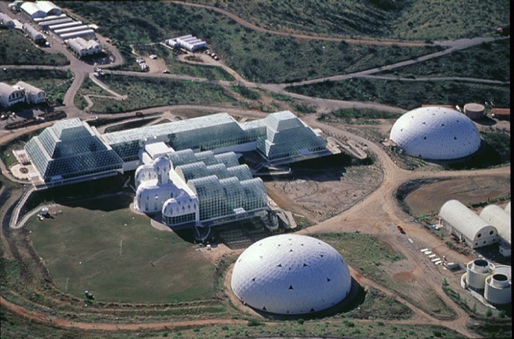
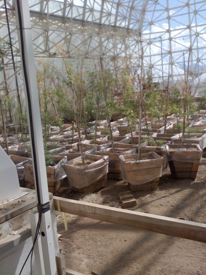
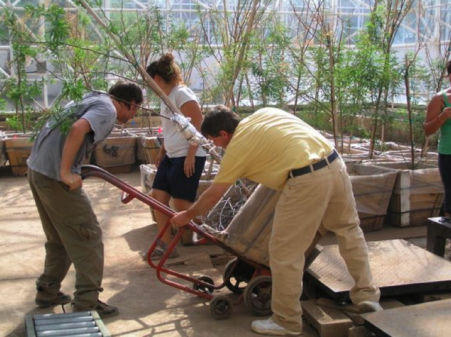
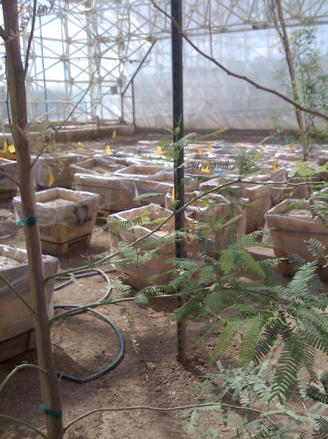
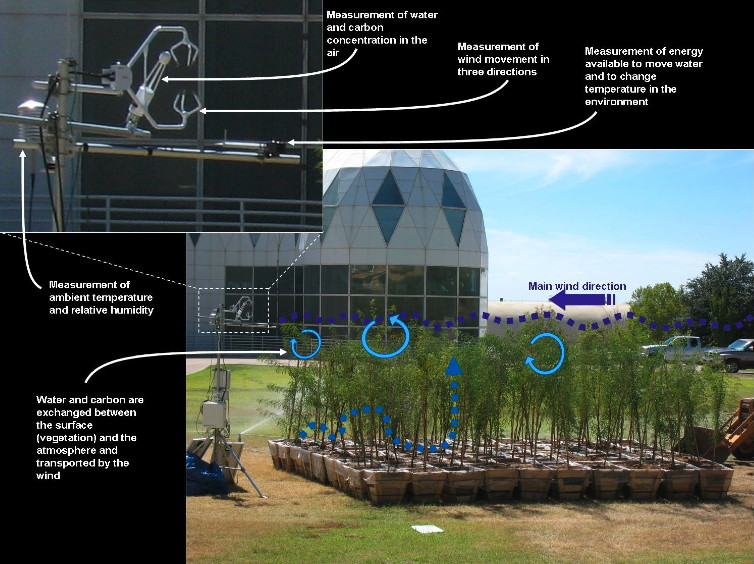

| [ HOME | About Evapotranspiration | Juan's Experiment | 5th Grade Citizen Scientist! ] |
|  | Juan Camilo Villegas is a PhD candidate at the University of Arizona in Tucson. He is doing an experiment to find out if adding trees to soil means that less water is lost. Juan is doing his experiment at the Biosphere 2, a research facility near Tucson. |
| In one part of the Biosphere, Juan has nearly 100 large pots of dirt. Some are planted with mesquite trees, the other pots are just full of bare dirt. Juan waters the pots every week, and then he checks how much water is lost. The pots are nearly 130 kilograms (about 280 pounds) each. He uses a large scale to weight the pots. When more water is lost, the pot is lighter. |
|  |  |  |
| The picture below shows some of the tools Juan uses to measure the atmosphere around the plants. This helps him get a better idea of how water leaves the plants and soil. |
|  |